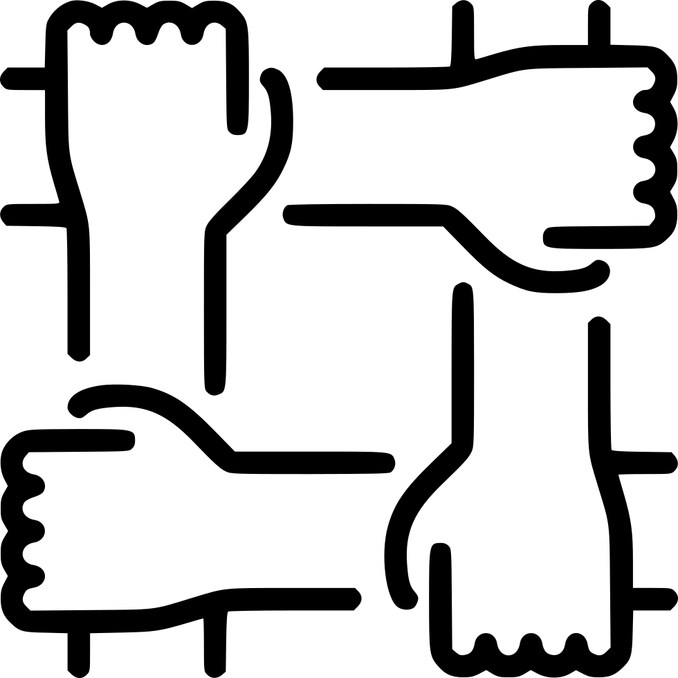

Technical Management
I have managed engineering teams for more than 20 years in both large and small companies. Teams have been as small as 5
engineers to as large as 70 engineers spanning multiple countries and timezones. This experience has
shaped my own identity as a technical manager.
Management Style
Like many managers, I am the product of my mentors who shared their wisdom and experience and who I admired and respected
over the course of my career. I have learned much from leaders I have worked for and worked with over
the years. These are some examples that describe elements of my leadership style.
Communication

Leaders have to get communication right. As a leader, I document workflows, tools, and designs so that they can be reviewed
and shared with others. I prefer collaborative tools like Confluence, Slack, and Teams. I have used
videos to demonstrate and share complex ideas. I do not call a lot of meetings, and when I do, I
try to ensure the content is important to everyone in the meeting. I prefer meetings as a tool for
design, collaboration, strategy, and broadcasting information as opposed to meetings for collecting
status. I pass down direction through leaders in the organization, and I prefer to query status directly.
I believe strongly in weekly 1:1 meetings as a space to communicate directly about topics ranging
from project status, priorities, strategy, career, or performance. I am an effective public speaker
and have presented at a couple of technical conferences and also served on a team as a coach to other
presenters.
Force Multipliers

Good leaders prioritize force multipliers as a means to drive team efficiency. This is a primary impetus for effective software
managers to be engaged in tools, automation, and Devops. Force multipliers can take many forms. Better
equipment is an example. Automation is another. If you can find a way to save 10 minutes in a workflow
that an engineer uses 10 times a day, then you are effectively adding recurring resources to your
team without incurring additional cost beyond the NRE to improve the workflow. Sometimes writing
something down saves the time of somebody else having to repeat the steps to accomplish something.
Even team building has a role. For example, having one local QA engineer to supplement an offshore
QA team can reduce painful turn-around times. Using a nearshore team in place of an offshore team
can have a similar benefit. When managing an organization, I look continuously for opportunities
to save time and maximize resources.
Collaboration
Collaboration is a style and a way of working. It can sit on a spectrum with competitiveness. If there are two similar
ideas, a collaboration will seek to combine the ideas to produce a better result, whereas a competition
will partition ownership and seek to place one idea firmly above the other. There is a role for both
in business. My style is openly more collaborative. I tend to explain problems and solicit solutions
rather than dictate edicts. Techniques including peer reviews, information sharing, retros, and being
open to continuous improvement exemplify a collaborative environment. A collaborative team shares
in successes, and learns and moves on from mistakes rather than focusing on blame. This makes working
environments both more productive and enjoyable.
Servant Leadership

Servant leadership places the role of a leader in support of the team. In engineering, this is a particularly important attribute,
because teams are often structured such that the most knowledgeable and productive members of a team
are not the manager, but are the dedicated individual contributors and subject matter experts who
are doing the hands-on work every day. This means that the most effective thing a manager can do
is to allow the team to do their jobs with the most efficient workflows, best tools, and the least
amount of interruptions. A good manager will act as a shield to the team, absorbing distractions
that suck energy and time from the team. Effective servant leadership requires trust and mutual respect,
because a manager has to allow team members to do their jobs effectively.
Agile

In my management approach, Agile has always meant aspiring to achieve the
12 Principles Behind the Agile Manifesto
as described by the Agile Alliance. This does not mean we have to
rigidly execute Scrum workflows. It does not mean that at all. There are no mentions of sprints,
stories, velocity, or ceremonies in the manifesto or its principles. Instead, Agile is about empowering
teams. Agile means that we should work incrementally, that we should react to changes in our business
and environment, that we should continuously reevaluate our progress and reprioritize our goals in
the context of the business environment, and that actions speak louder than words. To effectively
do these things, we must communicate well. Our engineering teams must be engaged with the business
teams, not just at the senior level, but at the team level. And everyone must share information so
that we can make sound business-oriented decisions together. Some people think that agile philosophies
are at odds with accurate execution, but that is not the case. If your business priority is to execute
to a schedule, then Agile just gives you a framework to work in to make that happen. "How does one
eat an elephant?" the adage goes, "One bite at a time."
Transparency
A leader's decisions are only as good as the data that they are based on, and there is no more important quality than transparency
and honesty. Managers are particularly susceptible to providing feedback that might hide underlying
problems in the team or its execution in order to delay or avoid judgement. But this kind of unreliability
puts an upstream manager in the impossible position of not being able to react or provide support
until it is too late. In my blog, I talk about the importance of being data driven and of measuring
results. Open collaborative environments require transparency to be effective. My propensity for
writing things down, using quantitative data, and sharing information speaks to the value I place
on it. I have a history of eschewing the gatekeeper mentality, meaning those people who regard closely
held knowledge as job security. If there is some method of doing something, a tool, or process that
nobody else knows, then simply write it down, show others how to do it, automate it, and move on
to a more creatively challenging problem. I let job security be the continuous value that one brings
to an organization rather than a finite piece of past knowledge. I value openness, honesty, and transparency
as core values of effective leadership.